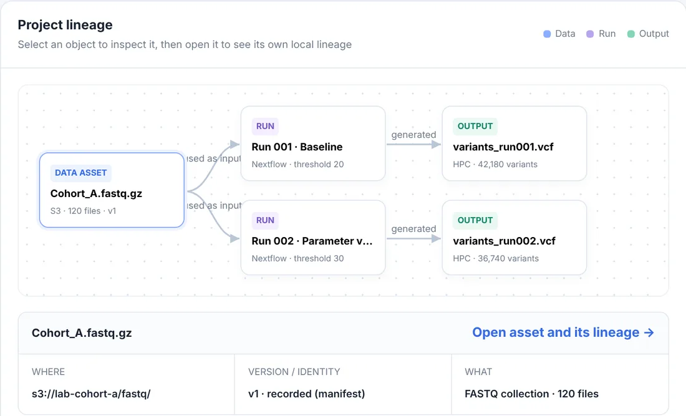

Know how every result was made.
Jubilab is a small tool for keeping the history of scientific analyses: what went in, what settings were used, what came out, and how sure the record is. It runs on your own machine.
More exactly: a local-first, self-hostable metadata layer. It links to your data where it lives and keeps pointers and context, not the data.
A result is a file. What made it is somewhere else.
It may be in a shell history, a notebook, an email. Months later, or when the analysis changes hands, the file is still there and the explanation is not.
What Jubilab keeps: the inputs, the parameters, the versions. Never your data.
Each processing run is written down once, with what it read, what settings it was given and which versions were involved, and then left alone. A changed setting is a new run. Work is kept in projects, and nothing is shared between projects.
How sure the record is, said plainly.
Every fact carries one of four labels. Jubilab does not say a result is reproducible, because a record cannot promise that.
- verifiedConfirmed against the thing itself.
- inferredWorked out from other records, not observed directly.
- manualEntered by a person.
- unknownNot captured. Shown as unknown, never guessed.
Following a result back, and forward.
variants_run002.vcf ← from run 002 ← from one input, Cohort_A.fastq.gz, and one setting, a quality threshold of 30.
Start at any output and read back to what produced it. Start at an input and read forward to everything that depends on it.

Comparing two runs.
Run 002 used a quality threshold of 30 instead of 20. It called 36,740 variants instead of 42,180. Executor, pipeline version and status are the same.
The changed words are marked. Jubilab records what differs. It does not say which result is better.
It runs on your machine.
- One command starts it, with Docker Compose or with Python: python -m server serve --data-dir ./data
- The server binds to localhost and makes no outbound network calls.
- No AI model is needed or used.
- Works offline. On a compute node with no internet, the command-line tool writes records to a file and sends them later.
The command above is copied from a real session on demo data.
Answers come from the record, or not at all.
You can ask a project a question. The answer is built only from what was recorded, and it points to the records it used. When the records do not hold the answer, Jubilab says it cannot determine it.
"Container digest not captured (unknown)."
From the product's answer in the demo project: it lists what is missing instead of filling it in.What it does not do yet.
- It is not a workflow engine.It does not run or schedule pipelines. It records runs.
- It is not storage.Your files stay where they are.
- It does not replace your tools.It sits next to them.
- There is no authentication yet.And no connectors for S3 or other stores, and no hosted service.
- The licence is not decided.The product is early-stage and not published, and it has no customers yet.
Short answers.
- Does it copy my data?
- No. It stores pointers and context about your data, not the data.
- Does it need the internet?
- No. The server makes no outbound network calls, and the command-line tool can record offline and send records later.
- Does it use an AI model?
- No model is needed or used.
- Can I try it?
- Early access is by request. Use the form below.
Request early access.
Tell us what you analyse, and we will write back.
Privacy note (placeholder): when this form is live we will use your email only to reply about early access, and will not share it or add trackers to this site.